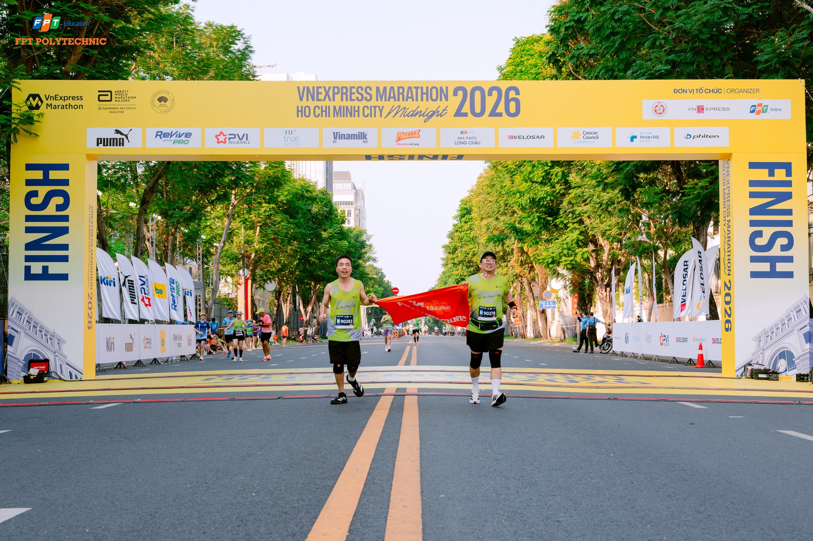
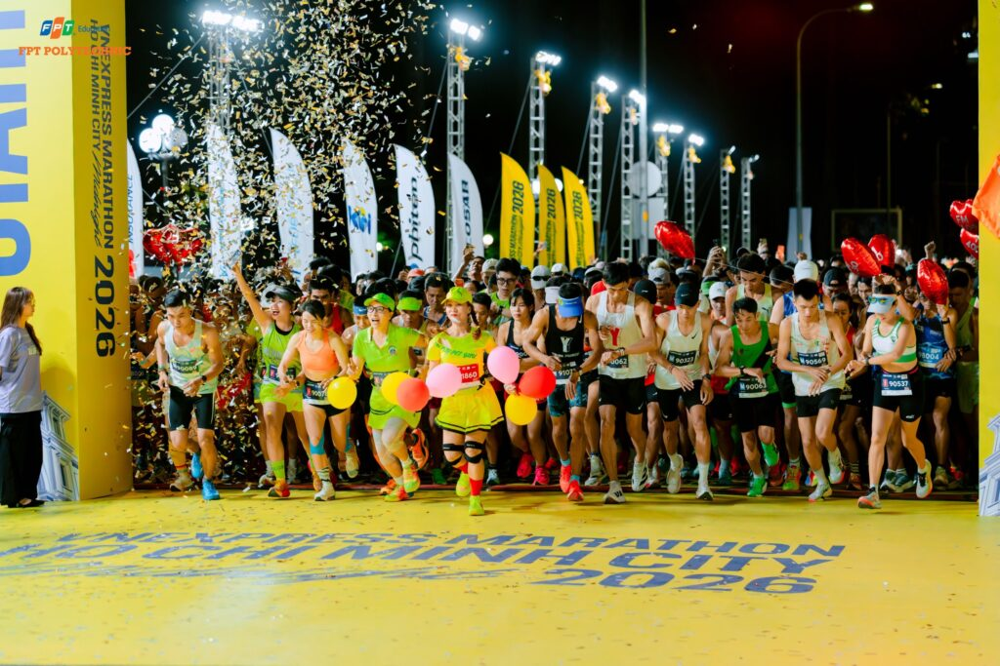
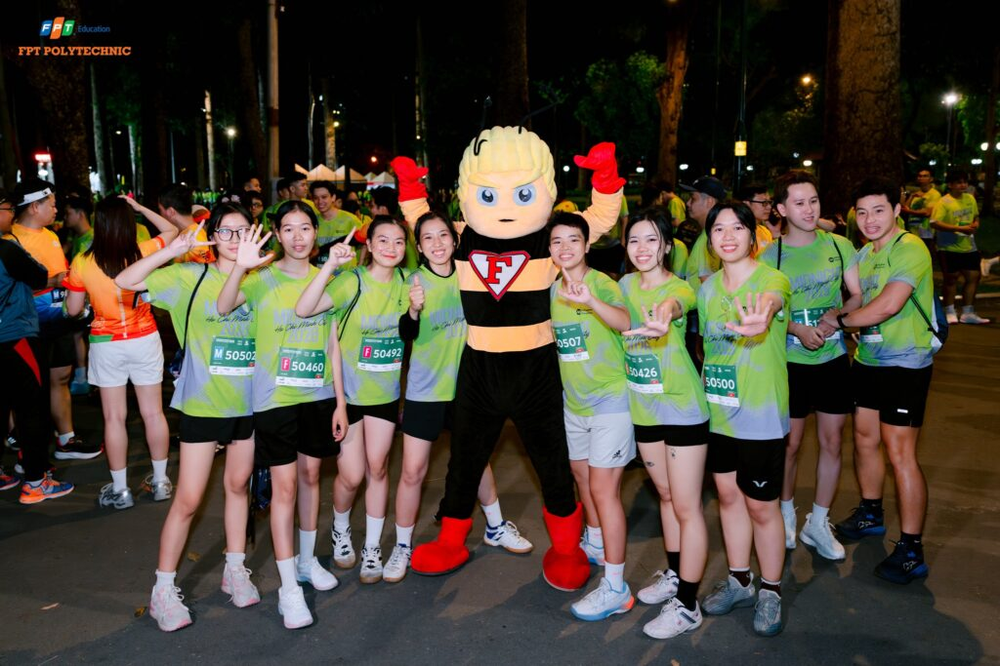

Hơn 300 vận động viên là cán bộ, giảng viên và sinh viên Trường Cao đẳng FPT Polytechnic cơ sở TP.HCM đã cùng góp mặt tại giải VnExpress Marathon Ho Chi Minh City Midnight 2026, tạo nên một dấu ấn mạnh mẽ và đầy cảm hứng trong cộng đồng chạy bộ sinh viên. Sự kiện không chỉ là một cuộc thi thể thao thông thường mà còn là hành trình khẳng định ý chí, sự bền bỉ và tinh thần không ngừng vượt qua giới hạn bản thân của tuổi trẻ FPT Polytechnic.

Tham gia giải chạy đêm giữa lòng thành phố
Tham gia giải chạy đêm giữa lòng thành phố, các vận động viên FPT Polytechnic đã cùng nhau chinh phục những cung đường rực rỡ ánh đèn. Mỗi bước chạy không chỉ hướng đến đích đến cuối cùng mà còn thể hiện tinh thần quyết tâm, sự kiên trì và bản lĩnh của tuổi trẻ Poly. Đây cũng là minh chứng rõ nét cho triết lý đào tạo toàn diện Thân – Tâm – Trí mà nhà trường luôn hướng đến.


Không khí của giải chạy
Không khí của giải chạy trở nên đặc biệt hơn khi mỗi vận động viên không chỉ chạy cho riêng mình, mà còn mang theo tinh thần tập thể và niềm tự hào chung. Dù là những sinh viên trẻ hay các giảng viên, cán bộ, tất cả đều hòa chung một nhịp bước, cùng nhau lan tỏa năng lượng tích cực và tinh thần thể thao lành mạnh. Bên cạnh những bước chân bền bỉ trên đường chạy, sự hiện diện của các cổ động viên cũng góp phần tạo nên một đêm thi đấu đáng nhớ. Những tiếng hò reo, những lời động viên và ánh nhìn tiếp sức đã trở thành nguồn năng lượng mạnh mẽ, giúp các vận động viên vượt qua giới hạn thể lực và tinh thần trong suốt hành trình.

Hành trình của hơn 300 vận động viên Poly trong đêm chạy là minh chứng rõ ràng cho thông điệp: chạy không chỉ để về đích, mà còn để vượt qua chính mình. Đó là hành trình của sự nỗ lực, của tinh thần không bỏ cuộc và của những giá trị bền vững mà thể thao mang lại. Một đêm không ngủ, nhưng đầy tự hào. Một hành trình nhiều thử thách, nhưng đong đầy cảm xúc. Sự góp mặt của đại gia đình FPT Polytechnic tại giải chạy lần này chắc chắn sẽ còn được nhắc đến như một dấu ấn đẹp trong hành trình phát triển phong trào thể thao sinh viên.
"Một đêm không ngủ, nhưng đầy tự hào"

